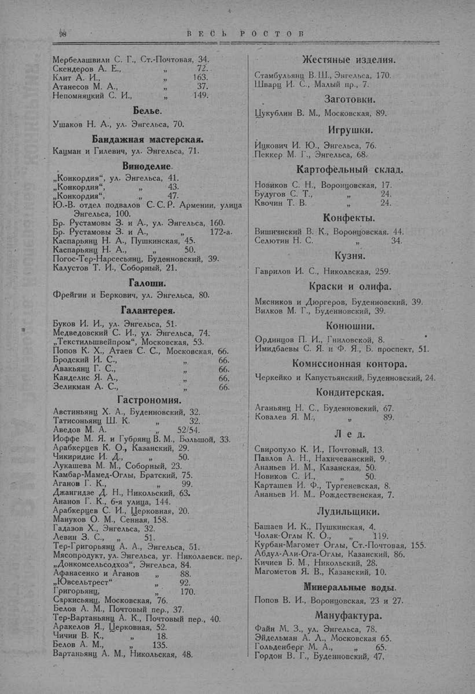

Лист источника 148
Скан

Распознанный текст
98
В Е С Ь Р О С Т О В
Мербелашвили С. Г., Ст.-Почтовая, 34.
Скендеров А. Е., " 72.
Клит А. И., " 163.
Атанесов М. А., " 37.
Непомнящий С. И., " 149.
Белье.
Ушаков Н. А., ул. Энгельса, 70.
Бандажная мастерская.
Кацман и Гилевич, ул. Энгельса, 71.
Виноделие.
„Конкордия“, ул. Энгельса, 41.
„Конкордия“, " 43.
„Конкордия“, " 47.
Ю.-В. отдел подвалов С. С. Р. Армении, улица
Энгельса, 100.
Бр. Рустамовы З. и А., ул. Энгельса, 160.
Бр. Рустамовы З. и А., " 172-а.
Каспарьянц Н. А., Пушкинская, 45.
Каспарьянц Н. А., " 50.
Погос-Тер-Нарсесьянц, Буденновский, 39.
Калустов Т. И., Соборный, 21.
Галоши.
Фрейгин и Беркович, ул. Энгельса, 80.
Галантерея.
Буков И. И., ул. Энгельса, 51.
Медведовский С. И., ул. Энгельса, 74.
„Текстильшвейпром“, Московская, 53.
Попов К. Х., Атаев С. С., Московская, 66.
Бродский И. С., " 66.
Авакьянц Г. С., " 66.
Канделис Я. А., " 66.
Зеликман А. С., " 66.
Гастрономия.
Австиньянц Х. А., Буденновский, 32.
Татисоньянц Ш. К. " 32.
Аведов М. А. " 52/54.
Иоффе М. Я. и Губрянц В. М., Большой, 33.
Арабкерцев К. О., Казанский, 29.
Чикиридис И. Д., " 50.
Лукашева М. М., Соборный, 23.
Камбар-Мамед-Оглы, Братский, 75.
Аганов Г. К., " 99.
Джангидзе Д. Н., Никольский, 63.
Ананов Г. К., 6-я улица, 144.
Арабкерцев С. И., Церковная, 20.
Мануков О. М., Сенная, 158.
Гадазов Х., Энгельса, 32.
Левин З. С., " 51.
Тер-Григорьянц А. А., Энгельса, 51.
Мясопродукт, ул. Энгельса, уг. Николаевск. пер.
„Донкомсельсодхоз“, Энгельса, 84.
Афанасенко и Аганов " 88.
„Ювсельтрест“ " 92.
Григорьянц, " 170.
Саркисьянц, Московская, 76.
Белов А. М., Почтовый пер., 37.
Тер-Вартаньянц А. К., Почтовый пер., 40.
Аракелов Я., Церковная, 52.
Чичин В. К., " 18.
Белов А. М., " 135.
Вартаньянц А. М., Никольская, 48.
Жестяные изделия.
Стамбульянц В. Ш., Энгельса, 170.
Шварц И. С., Малый пр., 7.
Заготовки.
Цукублин В. М., Московская, 89.
Игрушки.
Ицкович И. Ю., Энгельса, 76.
Пеккер М. Г., Энгельса, 68.
Картофельный склад.
Новиков С. Н., Воронцовская, 17.
Будугов С. Т., " 24.
Квочин Т. В. " 24.
Конфекты.
Вишнинский В. К., Воронцовская. 44.
Селютин Н. С. " 34.
Кузня.
Гаврилов И. С., Никольская, 259.
Краски и олифа.
Мясников и Дюргеров, Буденновский, 39.
Вилков М. Г., Буденновский, 39.
Конюшни.
Ординцов П. И., Гниловской, 8.
Имидбаевы С. Я. и Ф. Я., Б. проспект, 51.
Комиссионная контора.
Черкейко и Капустьянский, Буденновский, 24.
Кондитерская.
Аганьянц Н. С., Буденновский, 67.
Ковалев Я. М., " 89.
Л е д.
Свиропуло К. И., Почтовый, 13.
Павлов А. Н., Нахичеванский, 9.
Ананьев И. М., Казанская, 50.
Новиков С. И., " 50.
Карташев И. Ф., Тургеневская, 8.
Ананьев И. М., Рождественская, 7.
Лудильщики.
Башаев И. К., Пушкинская, 4.
Чолак-Оглы К. О., " 119.
Курбан-Магомет Оглы, Ст.-Почтовая, 155.
Абдул-Али-Ога-Оглы, Казанский, 86.
Кичиев Б. М., Никольский, 28.
Магометов Я. В., Казанский, 10.
Минеральные воды.
Попов В. И., Воронцовская, 23 и 27.
Мануфактура.
Файн М. З., ул. Энгельса, 78.
Эйдельман А. Л., Московская 65.
Гольденберг М. А., " 65.
Гордон В. Г., Буденновский, 47.